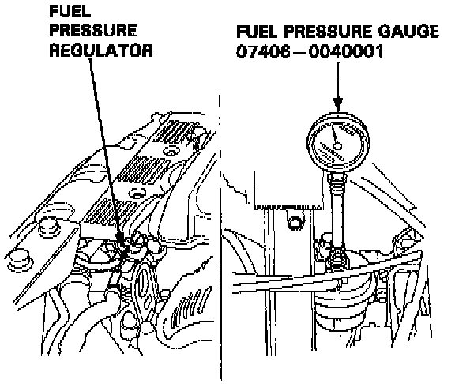

Fuel Pressure: Testing and Inspection
INSPECTION1. Relieve fuel pressure.
2. Remove the service bolt on the fuel filter while holding the banjo bolt with another wrench. Attach the fuel pressure gauge.
3. Start the engine. Measure the fuel pressure with the engine idling and vacuum hose of the fuel pressure regulator disconnected from the fuel pressure regulator and pinched.
Pressure should be: 330 - 370 kPa (46 - 53 psi)

4. Reconnect #7 vacuum hose to the intake manifold.
Pressure should be: 255 - 310 kPa (36 - 44 psi)
Note: If the engine will not start turn the ignition switch on, wait for two seconds, turn it off then back on again and read the fuel pressure.
If the fuel pressure is not as specified, first check the fuel pump. If the fuel pump is OK, check the following:
- If the fuel pressure is higher than specified, inspect for pinched or clogged fuel return hose or piping, faulty fuel pressure regulator.
- If the pressure is lower than specified, inspect for clogged fuel filter, faulty fuel pressure regulator, or leakage in the fuel hoses or pipes.